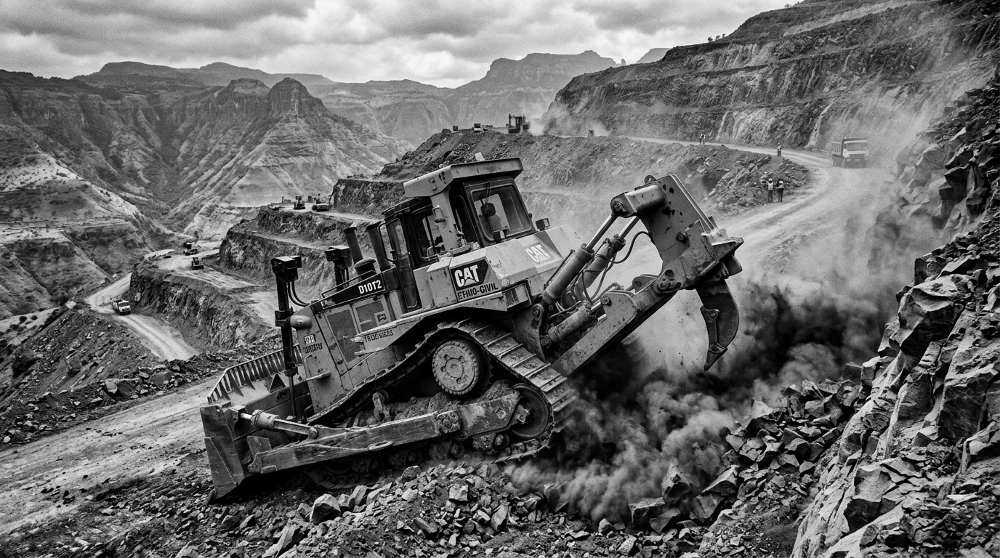

Excavation & Groundwork Services
Engineered civil earthmoving, precision trenching, and site enabling across Ethiopia. From deep Addis Ababa subterranean basalt digging to extensive agro-industrial park grading and regional arterial sub-base preparation.

Land Excavation & Rock Ripping
High-volume bulk cutting, precision hillside benching, and specialized fracture ripping in tough volcanic basalt formations throughout Ethiopian highland geology.
| Daily Output Rate: | 1,200 - 3,500 m³ / shift |
| Slope Stability: | Calibrated 1:1 to 1:1.5 benching |
| Rock Fracture: | Hydraulic breakers up to 4,500 Joules |
| Execution Profile: | Mass cut, fill balancing, spoil piling |
Basements & Structural Footings
Multi-level subterranean excavations in high-density urban corridors (Addis Ababa Financial District, Bole, Kazanchis). Precise perimeter rock chiseling, micro-pile shoring coordination, and zero-vibration rock breaking adjacent to existing structures.
| Subterranean Depth: | Up to 4 Basements (18.5m) |
| Perimeter Accuracy: | ±10 mm laser verified |
| Shoring Coordination: | Soldier piles & tie-back anchors |
| Urban Haul Velocity: | Night-shift rapid evacuation |
Precision Platform Grading
Massive land leveling and pad preparation for special economic zones, manufacturing logistics platforms, and agro-processing factories in Dukem, Hawassa, and Dire Dawa.
| Grading Scale: | 10 to 100+ Hectares |
| Laser Tolerance: | ±15 mm 3D GNSS Guided |
| Compaction Standard: | 98% Modified AASHTO (MDD) |
| Moisture Equilibrium: | Continuous bowser injection |
Road Earthworks & Subgrade
Corridor clearing, cut-and-fill profile balancing, culvert trenching, and capping layer preparation strictly meeting Ethiopian Roads Administration (ERA) Standard Specifications.
| Corridor Capacity: | Up to 25 km simultaneous stretch |
| Subgrade CBR: | CBR > 15% after substitution |
| Side Slope Drains: | Calibrated V-ditch trapezoidal cuts |
| Black Cotton Soil: | Complete replacement with granular fill |
Bulk Haulage & Spoil Management
Dedicated off-road articulated dumpers and on-highway tipper fleet for moving over 5,000 m³ of soil, rock debris, and borrowed selected material daily with environmental spoil landfill compliance.
| Haul Fleet: | 30+ Dedicated Tipper Trucks |
| Single Shift Volume: | Up to 4,500 m³ |
| Payload Capacity: | 40 Tonnes / Unit |
Deep Trenching & Retaining Walls
Precision trenching for stormwater culverts, electrical conduit banks, fiber backbones, and deep sewer mains across challenging basalt and cemented gravel layers.
| Trench Depth: | 1.5m to 8.0m |
| Trench Width: | 0.6m to 3.5m |
| Daily Linear Rate: | 250 - 600 Linear Meters |
Site Prep, Clearing & Grubbing
Initial site clearance, tree stump grubbing, topsoil stripping and stockpiling, and access haul road earthworks to enable heavy equipment to enter unimpeded.
| Area Throughput: | Up to 5 Hectares / Day |
| Topsoil Salvage: | Preserved for green areas |
| Mobilization: | Immediate field scout |